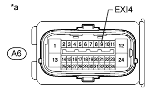

DTC C1282 Датчик положения блокировки межосевого дифференциала |
| Код DTC | Условие обнаружения DTC | Неисправный участок |
| C1282 | Сохраняется в режиме активной диагностики. |
|
| 1.ПРОВЕРЬТЕ ПЕРЕКЛЮЧЕНИЕ БЛОКИРОВКИ МЕЖОСЕВОГО ДИФФЕРЕНЦИАЛА |
Убедитесь, что межосевой дифференциал блокируется и разблокируется.
|
| ||||
| OK | |
| 2.ПРОВЕРЬТЕ DTC В РЕЖИМЕ АКТИВНОЙ ДИАГНОСТИКИ |
Переведите автомобиль в режим активной диагностики, выполните проверку сигнала блокировки межосевого дифференциала, а затем убедитесь, что DTC C1282 удален (Нажмите здесь).
| Результат | Следующий шаг |
| DTC не удален | А |
| DTC удален | B |
|
| ||||
| А | ||
| ||
| 3.ПРОВЕРЬТЕ НАПРЯЖЕНИЕ НА КОНТАКТЕ (EXI4) |
Установите автомобиль в состояние блокировки межосевого дифференциала с помощью переключателя блокировки межосевого дифференциала.
Отсоедините разъем A6 ЭБУ системы противоскольжения.
Установите замок зажигания в положение ON (ВКЛ).
|  |
Измерьте напряжение в соответствии со значениями, приведенными в таблице.
| Контакты для подключения диагностического прибора | Условие | Заданные условия |
| A6-9 (EXI4) - масса | Межосевой дифференциал заблокирован (переключатель блокировки межосевого дифференциала включен) | Менее 1,5 В |
| *a | Вид спереди разъема со стороны жгута проводов: (к ЭБУ системы противоскольжения) |
Подсоедините разъем A6 ЭБУ системы противоскольжения.
Установите автомобиль в состояние разблокировки межосевого дифференциала с помощью переключателя блокировки межосевого дифференциала.
Отсоедините разъем A6 ЭБУ системы противоскольжения.
Установите замок зажигания в положение ON (ВКЛ).
Измерьте напряжение в соответствии со значениями, приведенными в таблице.
| Контакты для подключения диагностического прибора | Условие | Заданные условия |
| A6-9 (EXI4) - масса | Межосевой дифференциал разблокирован (переключатель блокировки межосевого дифференциала в положении OFF (ВЫКЛ)) | 11 - 14 В |
|
| ||||
| OK | |
| 4.ПРОВЕРЬТЕ DTC В РЕЖИМЕ АКТИВНОЙ ДИАГНОСТИКИ |
Переведите автомобиль в режим активной диагностики, выполните проверку сигнала блокировки межосевого дифференциала, а затем убедитесь, что DTC C1282 удален (Нажмите здесь).
| Результат | Следующий шаг |
| DTC не удален | А |
| DTC удален | B |
|
| ||||
| А | ||
| ||
| 5.ПРОВЕРЬТЕ ЖГУТ ПРОВОДОВ И РАЗЪЕМ (ЭБУ СИСТЕМЫ ПРОТИВОСКОЛЬЖЕНИЯ – ЭБУ ПОЛНОГО ПРИВОДА / ПРИВОД ПЕРЕКЛЮЧЕНИЯ РАЗДАТОЧНОЙ КОРОБКИ) |
Отсоедините разъем A6 ЭБУ системы противоскольжения.
Отсоедините разъем G53 ЭБУ полного привода.
Отсоедините разъем C43 привода переключения раздаточной коробки.
Измерьте сопротивление в соответствии со значениями, приведенными в таблице ниже.
| Контакты для подключения диагностического прибора | Условие | Заданные условия |
| A6-9 (EXI4) - G53-14 (P1) | Всегда | Менее 1 Ом |
| A6-9 (EXI4) - C43-9 (CDL) | Всегда | Менее 1 Ом |
| A6-9 (EXI4) - масса | Всегда | 10 кОм или более |
|
| ||||
| OK | ||
| ||